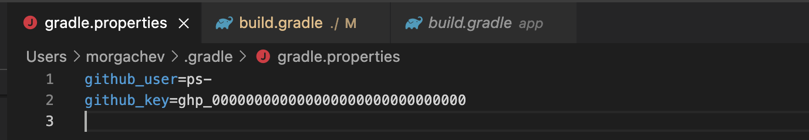

Gradle Instructions - Android
Preparation
- Set up Gradle build with the Product Science plugin from the Product Science Github repo (see instructions below.)
- Determine a named developer resource for Product Science to partner with for generating new builds
- Ideally create a trigger for Product Science to generate new builds to increase speed of the Optimization process
Optimization Loop
The Loop is repeated by your developers 20+ times initially and 5+ times with every major update.
- [Your devs] Build the app with PSi Gradle plugin
- Ideally Product Science is provided with a trigger to create automation- otherwise a named developer can be supplied to rebuild
- [Your devs] Provide a cloud link to your .apk
- [Product Science] Runs the app and collects app performance data
- Optimization may finish and we proceed to Insight Generation
- [Product Science] Feeds the app performance data to Product Science optimization algorithms
- [Product Science] Algorithms update model in the Product Science Github repo
- [Your devs] Next build will use the new model from the Product Science Github repo automatically
Gradle Instructions
1. Key Generation Methodology- PSi:
- Generates a token (key) via GitHub
- Saves key in Bitwarden credential storage
- Shares token with Bitwarden Send
- Keys have an expiration date
2. Configure gradle.properties
Set up gradle.properties in Gradle home directory:
github_user=<supplied-by-PSi>
github_key=<supplied-by-PSi>
For example:

3. Add Maven Built Info
In build.gradle add the maven build info to the repositories for project and subprojects:
maven {
url "https://maven.pkg.github.com/product-science/PSAndroid"
credentials {
username = github_user
password = github_key
}
}
For example:
and
4. Add the PSi Classpath to Dependencies
Note that we are using a demo app for this example called “Signal” to visualize the process
classpath "com.productscience.transformer:transformer-plugin:0.8.25_S"
classpath "com.productscience.transformer:transformer-instrumentation:0.8.25_S"
For example:
5. Enable PSi Profiling
Add <profileable android:shell="true" /> into AndroidManifest.xml to enable profiling
For example:
6. Apply the PSi transformer.plugin
Apply plugin: "com.productscience.transformer.plugin" to app/build.gradle
For example:
7. Setup PSi Properties
Create a file called productscience.properties and add the PSi config/token to it
productscience.github.config=product-science:CLIENTNAME-configs:ps-CLIENTNAME.yaml:master
productscience.github.token=<supplied-by-PSI>
8. Build Your App
Now you can build your app with Gradle
For example:
Separate build configuration
For the future work convenience it’s best to create a separate build configuration with PSi.
A special flag enableProductScience can be used for these purposes:
Then you can build your app with PSi using the flag: